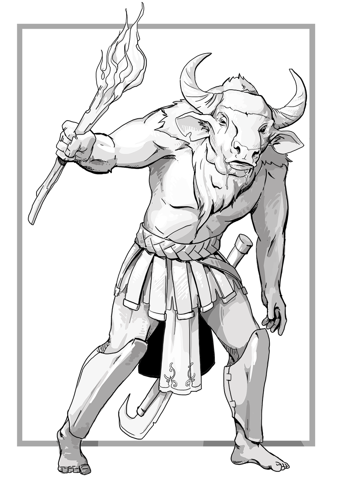

Complete Monster
by
Radaghast Kary
← Minor Xorn
↑Index↑
Minotaur Cabalist →

Illustration by Mariana Ruiz Villarreal,
Public Domain
Minotaur
is
Beastfolk
Members:
Minotaur Cabalist
Minotaur Mercenary
Minotaur Skeleton
Minotaur Strong Hero
Minotaur Warrior
Minotaur Zombie
Savage Minotaur
General
General links
Minotaur on Wikipedia
5e
CE
D&D 5 facts
Size: Large
Type:
Monstrosity
CR: 3
D&D 5 sources
Monster Manual
, p. 223
D&D 5 links
Minotaur in 5e d20 SRD
Minotaur on AideD&D
3e
CE
D&D 3.0 facts
Abilities: Str 19, Dex 10, Con 15, Int 7, Wis 10, Cha 8
AC: 14 (-1 size, +5 natural)
Advancement: By character class
Attacks: Huge greataxe +9/+4 melee, gore +4 melee
CR: 4
Damage: Huge greataxe 2d8+4, gore 1d8+2
HD: 6d8+12 (39)
Initiative: +0
Organization: Solitary or gang (2-4)
Qualities: Scent, natural cunning
Reach: 5 ft. by 5 ft./10 ft.
Saves: Fort +6, Ref +5, Will +5
Size: Large
Skills: Minotaurs receive a +4 racial bonus to Search, Spot, and Listen checks.
Speed: 30 ft.
Terrain: Any underground
Treasure: Standard
Type:
Monstrous Humanoid
D&D 3.0 links
Minotaur in 3.0 d20 SRD
D&D 3.5 facts
Type:
Monstrous Humanoid
Size: Large
CR: 4
D&D 3.5 sources
Monster Manual
, p. 188
D&D 3.5 links
Minotaur in 3.5e d20 SRD
Pathfinder 2 facts
Level: 4
Pathfinder 2 sources
Bestiary
Pathfinder 2 links
Minotaur Monster in Pathfinder 2 SRD
CE
d20 Modern facts
Size: Large
Type: monstrous humanoid
CR: 4
HD: 6d8+12
HP: 39
Massive Damage Threshold: 15
Initiative: +0
Speed: 30 ft.
Defense: 14, touch 9, flat-footed 14 (-1 size, +5 natural)
BAB: +6
Grapple: +14
Attack: +9 melee (2d6+6, Huge lead pipe)
Full Attack: +9/+4 melee (2d6+4, Huge lead pipe), +4 melee (1d8+2, gore), or +9/+4 melee (1d4+4, slam), +4 melee (1d8+2, gore), or +5 ranged
Fighting Space: 10 ft. by 10 ft.
Reach: 10 ft.
Special Qualities: charge 4d6+6, scent, natural cunning, darkvision 60 ft.
Saves: Fort +6, Ref +5, Will +5
Action Points: 0
Reputation: +0
Abilities: Str 19, Dex 10, Con 15, Int 7, Wis 10, Cha 8
d20 Modern sources
d20 Modern
d20 Modern links
Minotaur on DM Reference
2e
FPG
sources
Wrath of the Minotaur
, p. 29
1e
First BD&D
sources
Basic Set (Holmes)
, p. 30
TN
LE
BLUEHOLME facts
BLUEHOLME sources
BLUEHOLME Journeymanne Rules
BLUEHOLME Prentice Rules
, p. 38
BLUEHOLME links
Minotaur Dreamscape Design
BLUEHACK sources
BLUEHACK
, p. 21
0e
OD&D facts
Number Appearing: 1-8
AC: 6
Move: 12
HD: 6
Chance in Lair: 10%
Treasure: Type C
OD&D sources
Monsters & Treasure
, p. 4
C
S&W
facts
AC: [13]
Attacks: weapon (+2 for strength)
HD: 6+4
HDE: : 6
Move: 4
Special: Never lost in labyrinths, darkvision
XP: 400
S&W
sources
The Blue Book of Dangers and Dweomers
, p. 91
{kind=link}